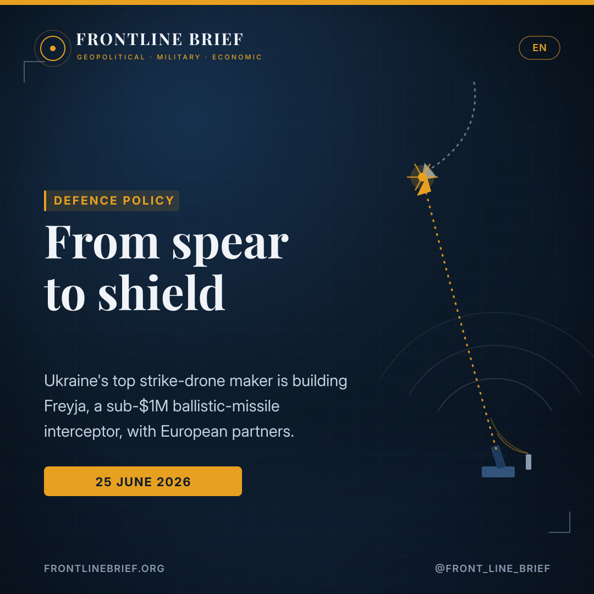
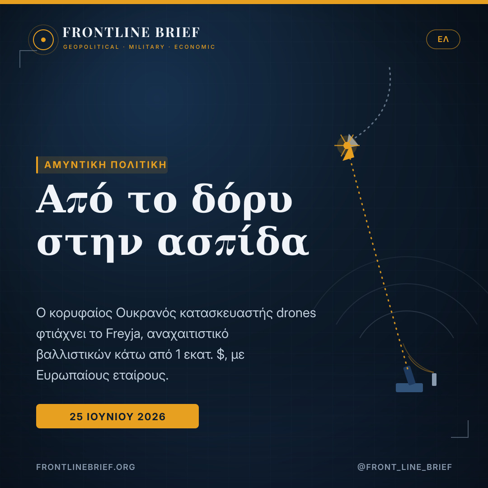
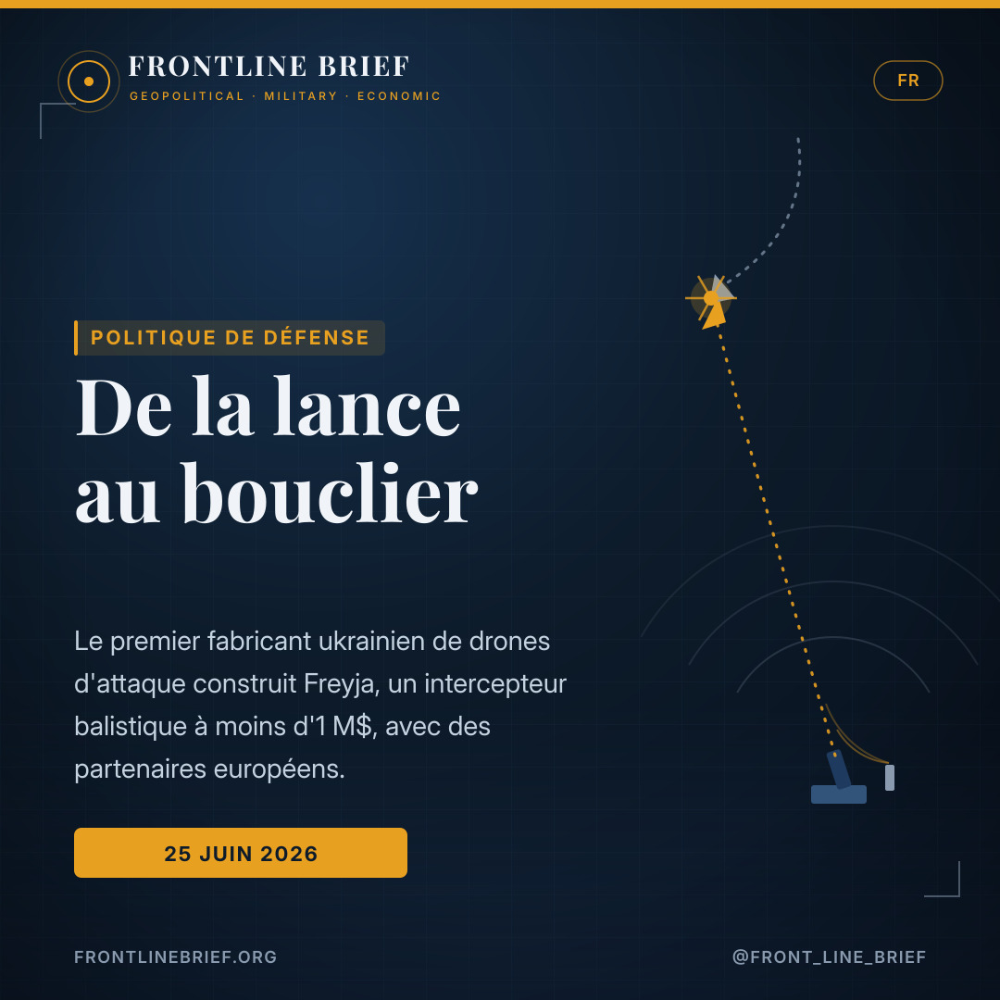
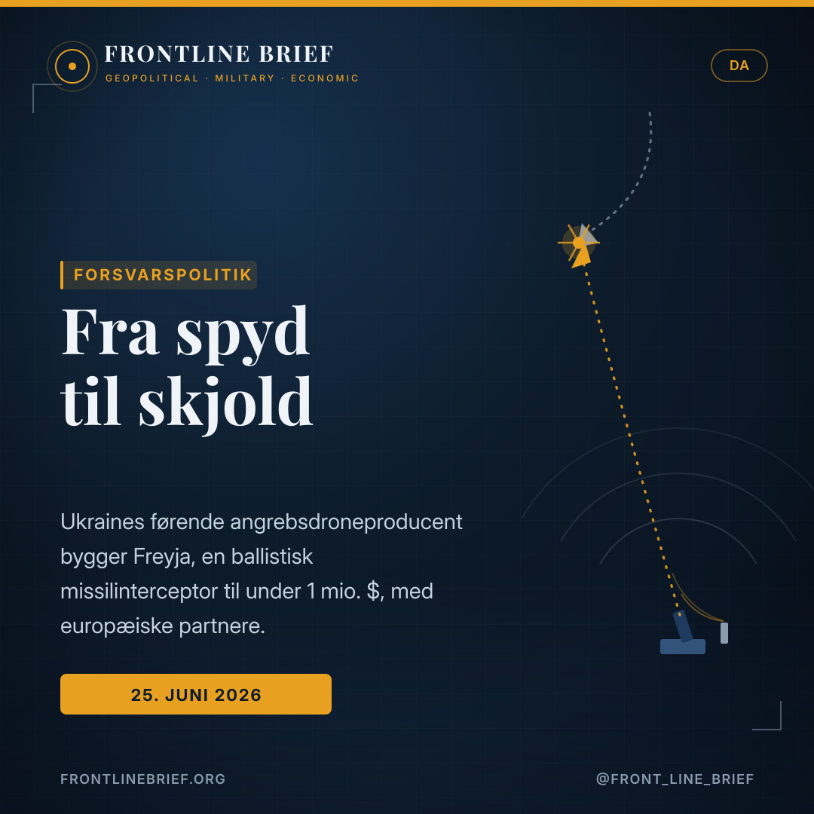
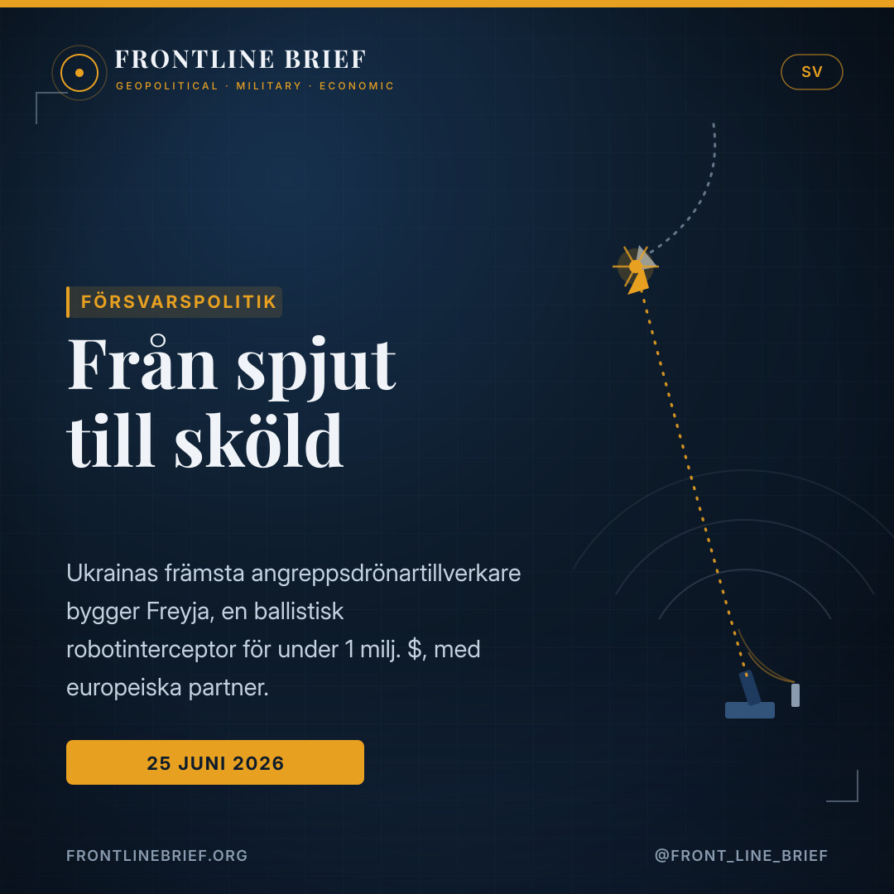

From spear to shield: Ukraine's top strike-drone maker moves into ballistic-missile defence
Fire Point, the firm behind most of the long-range drones now hitting Russian refineries, is building a low-cost ballistic-missile interceptor with European partners. If it can stop a missile for under a million dollars a shot, it would put Ukraine at both ends of the deep-strike war — and reset the economics of air defence.





Spear-maker turns shield-maker
Fire Point — maker of the FP-1 and FP-2 deep-strike drones and the FP-5 Flamingo cruise missile, behind roughly 60% of Ukraine's strikes inside Russia — has signed a deal with Germany's Hensoldt to build a ballistic-missile defence system called Freyja, around its FP-7.X interceptor.
A fraction of a Patriot
The FP-7.X is designed to kill a ballistic missile at around 15 miles altitude for roughly $700,000 a shot, against about $3.8M for a Patriot PAC-3. Fire Point aims to mass-produce three a day from August and to intercept its first missile by the end of 2027.
Made with Europe
Freyja would wrap the interceptor in a European sensor and command layer: Hensoldt radar, with talks reported with Thales on radar, Leonardo on tracking and Kongsberg on command and control. Ukraine casts itself as a provider of security, not just a recipient of aid.
From spear to shield
The company that supplies much of Ukraine's offensive reach is now turning to its defence. Fire Point, whose drones fly a large share of the long-range strikes that set Russian refineries alight, has signed an agreement with the German radar maker Hensoldt to build a ballistic-missile defence system called Freyja, built around a new interceptor known as the FP-7.X. The move places one firm at both ends of the deep-strike war — forging the spear and, now, the shield.
The maker of the long-range war
Fire Point sits at the heart of Kyiv's campaign of what President Zelensky calls "long-range sanctions": drones and missiles sent hundreds of miles into Russia to burn the refineries, fuel depots and arms plants that sustain Moscow's war. Its FP-1 and FP-2 strike drones and FP-5 Flamingo cruise missile account, the company says, for around 60% of Ukraine's strikes inside Russia. By Kyiv's account the reach keeps growing — a June strike hit a refinery in the Tyumen region well over a thousand miles from the border, and modernised drones are said to range out to 3,000 kilometres.
A cheaper way to stop a ballistic missile
The economics are the heart of the pitch. The FP-7.X is designed to intercept a ballistic missile at roughly 15 miles altitude for about $700,000 a shot — against something like $3.8 million for a Patriot PAC-3, before counting that Patriot often expends two or three interceptors per target. Fire Point wants to mass-produce the round at three a day from August and to make its first interception by the end of 2027; it flight-tested the FP-7.X in early June in what one co-founder described as a fully controlled manoeuvring flight.
If a country that builds the spear can also build the shield for a fraction of a Patriot's price, the economics of air defence start to look very different.
A European coalition
Freyja is not meant to be a purely Ukrainian system. The plan is to wrap the interceptor in a stack of European sensors and command systems: radar from Hensoldt, with reported talks with Thales on radar, Leonardo on tracking and Kongsberg on command and control. Fire Point frames the project as evidence that Ukraine has crossed a threshold — from a consumer of Western aid to a supplier of security solutions for the wider continent, with interceptors, in one co-founder's words, soon in the skies of all of Europe.
The shadow over the story
The rise has drawn scrutiny as well as partners. Fire Point did not exist before Russia's 2022 invasion — it began as a film and television casting agency — and is now one of Ukraine's largest defence contractors, holding more than a billion dollars in state contracts this year. It has been named in connection with a sweeping energy-corruption case tied to a businessman close to the president, and is under investigation by Ukraine's national anti-corruption bureau. Fire Point denies that the businessman holds any stake, says it belongs only to its co-founders, and notes that no charges have been filed against it; it has also moved to court Western backing. The investigation runs alongside, rather than over, a programme that allies will judge above all on whether it can actually knock missiles down at the price advertised.
Από το δόρυ στην ασπίδα
Η εταιρεία που τροφοδοτεί μεγάλο μέρος της επιθετικής εμβέλειας της Ουκρανίας στρέφεται τώρα στην άμυνά της. Η Fire Point, της οποίας τα drones εκτελούν μεγάλο μερίδιο των πληγμάτων μεγάλου βεληνεκούς που βάζουν φωτιά στα ρωσικά διυλιστήρια, υπέγραψε συμφωνία με τη γερμανική κατασκευάστρια ραντάρ Hensoldt για ένα σύστημα αντιβαλλιστικής άμυνας με την ονομασία Freyja, χτισμένο γύρω από έναν νέο αναχαιτιστή, τον FP-7.X. Η κίνηση τοποθετεί μία εταιρεία και στα δύο άκρα του πολέμου βαθιάς κρούσης — σφυρηλατώντας το δόρυ και, τώρα, την ασπίδα.
Ο κατασκευαστής του πολέμου μεγάλου βεληνεκούς
Η Fire Point βρίσκεται στην καρδιά της εκστρατείας που ο πρόεδρος Ζελένσκι αποκαλεί «κυρώσεις μεγάλου βεληνεκούς»: drones και πύραυλοι που στέλνονται εκατοντάδες χιλιόμετρα μέσα στη Ρωσία για να κάψουν τα διυλιστήρια, τις αποθήκες καυσίμων και τα εργοστάσια όπλων που συντηρούν τον πόλεμο της Μόσχας. Τα drones FP-1 και FP-2 και ο πύραυλος cruise FP-5 Flamingo ευθύνονται, κατά την εταιρεία, για περίπου το 60% των ουκρανικών πληγμάτων εντός Ρωσίας. Σύμφωνα με το Κίεβο, η εμβέλεια ολοένα μεγαλώνει — πλήγμα τον Ιούνιο χτύπησε διυλιστήριο στην περιοχή Τιουμέν, πολύ πάνω από χίλια μίλια από τα σύνορα, ενώ τα εκσυγχρονισμένα drones λέγεται ότι φτάνουν τα 3.000 χιλιόμετρα.
Ένας φθηνότερος τρόπος να σταματάς έναν βαλλιστικό
Τα οικονομικά είναι ο πυρήνας του επιχειρήματος. Ο FP-7.X σχεδιάζεται να αναχαιτίζει βαλλιστικό πύραυλο σε ύψος περίπου 24 χιλιομέτρων με κόστος γύρω στα 700.000 δολάρια ανά βολή — έναντι περίπου 3,8 εκατομμυρίων για ένα Patriot PAC-3, και πριν καν μετρήσει κανείς ότι το Patriot συχνά καταναλώνει δύο ή τρεις αναχαιτιστές ανά στόχο. Η Fire Point θέλει να παράγει μαζικά τρεις την ημέρα από τον Αύγουστο και να πετύχει την πρώτη αναχαίτιση έως το τέλος του 2027· δοκίμασε σε πτήση τον FP-7.X στις αρχές Ιουνίου, σε αυτό που μια συνιδρύτρια περιέγραψε ως πλήρως ελεγχόμενη ελιγμική πτήση.
Αν μια χώρα που φτιάχνει το δόρυ μπορεί να φτιάξει και την ασπίδα σε κλάσμα της τιμής ενός Patriot, τα οικονομικά της αεράμυνας αρχίζουν να φαίνονται πολύ διαφορετικά.
Ένας ευρωπαϊκός συνασπισμός
Το Freyja δεν προορίζεται να είναι καθαρά ουκρανικό σύστημα. Το σχέδιο είναι να «τυλιχτεί» ο αναχαιτιστής σε μια στοίβα ευρωπαϊκών αισθητήρων και συστημάτων διοίκησης: ραντάρ από τη Hensoldt, με αναφορές για συνομιλίες με τη Thales για ραντάρ, τη Leonardo για παρακολούθηση και την Kongsberg για διοίκηση και έλεγχο. Η Fire Point παρουσιάζει το έργο ως απόδειξη ότι η Ουκρανία πέρασε ένα κατώφλι — από καταναλωτής δυτικής βοήθειας σε προμηθευτή λύσεων ασφάλειας για την ευρύτερη ήπειρο, με αναχαιτιστές, όπως είπε συνιδρυτής, σύντομα στους ουρανούς όλης της Ευρώπης.
Η σκιά πάνω από την ιστορία
Η άνοδος προσέλκυσε εξονυχιστικό έλεγχο, όχι μόνο εταίρους. Η Fire Point δεν υπήρχε πριν από τη ρωσική εισβολή του 2022 — ξεκίνησε ως γραφείο κάστινγκ για κινηματογράφο και τηλεόραση — και είναι σήμερα ένας από τους μεγαλύτερους αμυντικούς αναδόχους της Ουκρανίας, με κρατικά συμβόλαια άνω του ενός δισεκατομμυρίου δολαρίων φέτος. Έχει αναφερθεί σε σχέση με μια ευρεία υπόθεση διαφθοράς στον ενεργειακό τομέα που συνδέεται με επιχειρηματία κοντινό στον πρόεδρο, και τελεί υπό έρευνα από το εθνικό γραφείο κατά της διαφθοράς της Ουκρανίας. Η Fire Point αρνείται ότι ο επιχειρηματίας κατέχει μερίδιο, λέει ότι ανήκει μόνο στους συνιδρυτές της και σημειώνει ότι δεν έχει απαγγελθεί καμία κατηγορία εναντίον της· έχει επίσης επιδιώξει δυτική στήριξη. Η έρευνα τρέχει παράλληλα — όχι πάνω από — ένα πρόγραμμα που οι σύμμαχοι θα κρίνουν κυρίως από το αν μπορεί όντως να ρίχνει πυραύλους στην τιμή που διαφημίζεται.
De la lance au bouclier
L'entreprise qui fournit une grande part de l'allonge offensive ukrainienne se tourne désormais vers sa défense. Fire Point, dont les drones réalisent une large part des frappes longue portée qui embrasent les raffineries russes, a signé un accord avec le fabricant de radars allemand Hensoldt pour bâtir un système de défense antibalistique baptisé Freyja, articulé autour d'un nouvel intercepteur, le FP-7.X. La manœuvre place une même firme aux deux bouts de la guerre de frappe en profondeur — forgeant la lance et, désormais, le bouclier.
Le fabricant de la guerre longue portée
Fire Point est au cœur de la campagne de ce que le président Zelensky appelle les « sanctions longue portée » : drones et missiles expédiés à des centaines de kilomètres en Russie pour brûler les raffineries, dépôts de carburant et usines d'armement qui soutiennent la guerre de Moscou. Ses drones FP-1 et FP-2 et son missile de croisière FP-5 Flamingo représenteraient, selon l'entreprise, environ 60 % des frappes ukrainiennes en Russie. Selon Kyiv, l'allonge ne cesse de croître — une frappe de juin a touché une raffinerie dans la région de Tioumen, à bien plus de mille milles de la frontière, et les drones modernisés porteraient jusqu'à 3 000 kilomètres.
Un moyen moins cher d'arrêter un missile balistique
L'économie est le cœur de l'argument. Le FP-7.X est conçu pour intercepter un missile balistique à environ 24 kilomètres d'altitude pour quelque 700 000 dollars le tir — contre près de 3,8 millions pour un Patriot PAC-3, sans même compter que le Patriot consomme souvent deux ou trois intercepteurs par cible. Fire Point veut en produire en masse trois par jour dès août et réussir sa première interception d'ici fin 2027 ; l'entreprise a effectué un essai en vol du FP-7.X début juin, décrit par une cofondatrice comme un vol manœuvrant pleinement contrôlé.
Si un pays capable de forger la lance sait aussi forger le bouclier pour une fraction du prix d'un Patriot, l'économie de la défense aérienne change de visage.
Une coalition européenne
Freyja n'est pas censé être un système purement ukrainien. Le plan est d'envelopper l'intercepteur dans une pile de capteurs et de systèmes de commandement européens : radar de Hensoldt, avec des discussions rapportées avec Thales sur le radar, Leonardo sur le pistage et Kongsberg sur le commandement et le contrôle. Fire Point présente le projet comme la preuve que l'Ukraine a franchi un seuil — de consommatrice d'aide occidentale à fournisseuse de solutions de sécurité pour le continent, avec des intercepteurs, selon un cofondateur, bientôt dans le ciel de toute l'Europe.
L'ombre au tableau
Cette ascension a attiré les soupçons autant que les partenaires. Fire Point n'existait pas avant l'invasion russe de 2022 — elle débuta comme agence de casting pour le cinéma et la télévision — et figure aujourd'hui parmi les plus gros contractants de défense ukrainiens, avec plus d'un milliard de dollars de contrats publics cette année. Elle a été citée en lien avec une vaste affaire de corruption énergétique impliquant un homme d'affaires proche du président, et fait l'objet d'une enquête du bureau national anticorruption ukrainien. Fire Point nie que cet homme d'affaires détienne la moindre part, affirme n'appartenir qu'à ses cofondateurs et souligne qu'aucune charge n'a été retenue contre elle ; elle a aussi cherché des soutiens occidentaux. L'enquête se déroule en parallèle — et non au-dessus — d'un programme que les alliés jugeront surtout à sa capacité réelle à abattre des missiles au prix annoncé.
Fra spyd til skjold
Virksomheden, der leverer en stor del af Ukraines offensive rækkevidde, vender sig nu mod forsvaret. Fire Point, hvis droner flyver en stor andel af de langtrækkende angreb, der sætter russiske raffinaderier i brand, har indgået en aftale med den tyske radarproducent Hensoldt om at bygge et ballistisk missilforsvar ved navn Freyja omkring en ny interceptor, FP-7.X. Trækket placerer ét firma i begge ender af dybdeangrebskrigen — det smeder spyddet og nu skjoldet.
Producenten af den langtrækkende krig
Fire Point er i hjertet af det, præsident Zelenskyj kalder «langtrækkende sanktioner»: droner og missiler sendt hundreder af kilometer ind i Rusland for at brænde de raffinaderier, brændstofdepoter og våbenfabrikker, der opretholder Moskvas krig. Dens FP-1- og FP-2-droner og FP-5 Flamingo-krydsermissil står ifølge firmaet for omkring 60% af Ukraines angreb i Rusland. Ifølge Kyiv vokser rækkevidden fortsat — et angreb i juni ramte et raffinaderi i Tjumen-regionen langt over tusind miles fra grænsen, og moderniserede droner siges at nå 3.000 kilometer.
En billigere måde at stoppe et ballistisk missil
Økonomien er kernen i salgstalen. FP-7.X er designet til at opfange et ballistisk missil i omkring 24 kilometers højde for cirka 700.000 dollars pr. skud — mod omkring 3,8 millioner for en Patriot PAC-3, før man tæller, at Patriot ofte bruger to-tre interceptorer pr. mål. Fire Point vil masseproducere tre om dagen fra august og opnå sin første opfangning inden udgangen af 2027; firmaet flyveafprøvede FP-7.X i begyndelsen af juni i, hvad en medstifter kaldte en fuldt kontrolleret manøvrerende flyvning.
Hvis et land, der bygger spyddet, også kan bygge skjoldet for en brøkdel af en Patriots pris, ser luftforsvarets økonomi pludselig meget anderledes ud.
En europæisk koalition
Freyja er ikke tænkt som et rent ukrainsk system. Planen er at pakke interceptoren ind i et lag af europæiske sensorer og kommandosystemer: radar fra Hensoldt, med rapporterede drøftelser med Thales om radar, Leonardo om sporing og Kongsberg om kommando og kontrol. Fire Point fremstiller projektet som bevis på, at Ukraine har krydset en tærskel — fra forbruger af vestlig hjælp til leverandør af sikkerhedsløsninger for kontinentet, med interceptorer, med en medstifters ord, snart på himlen over hele Europa.
Skyggen over historien
Fremgangen har tiltrukket både partnere og granskning. Fire Point eksisterede ikke før Ruslands invasion i 2022 — det begyndte som et casting-bureau for film og tv — og er i dag en af Ukraines største forsvarsleverandører med statskontrakter for over en milliard dollars i år. Det er blevet nævnt i forbindelse med en omfattende energikorruptionssag knyttet til en forretningsmand tæt på præsidenten og efterforskes af Ukraines nationale antikorruptionsbureau. Fire Point afviser, at forretningsmanden ejer nogen andel, siger, at det kun tilhører dets medstiftere, og bemærker, at der ikke er rejst tiltale mod det; det har også søgt vestlig opbakning. Efterforskningen kører ved siden af — ikke over — et program, som allierede frem for alt vil bedømme på, om det faktisk kan skyde missiler ned til den annoncerede pris.
Från spjut till sköld
Företaget som levererar en stor del av Ukrainas offensiva räckvidd vänder sig nu mot försvaret. Fire Point, vars drönare flyger en stor andel av de långräckviddiga slag som sätter ryska raffinaderier i brand, har tecknat ett avtal med den tyska radartillverkaren Hensoldt om att bygga ett ballistiskt robotförsvar kallat Freyja, byggt kring en ny interceptor, FP-7.X. Draget placerar ett och samma företag i båda ändar av djupslagskriget — det smider spjutet och nu skölden.
Tillverkaren av det långräckviddiga kriget
Fire Point står i hjärtat av det president Zelenskyj kallar «långräckviddiga sanktioner»: drönare och robotar som sänds hundratals kilometer in i Ryssland för att bränna de raffinaderier, bränsledepåer och vapenfabriker som håller Moskvas krig igång. Dess FP-1- och FP-2-drönare och kryssningsroboten FP-5 Flamingo står enligt företaget för omkring 60% av Ukrainas slag i Ryssland. Enligt Kyiv växer räckvidden alltjämt — ett slag i juni träffade ett raffinaderi i Tjumenregionen långt över tusen miles från gränsen, och moderniserade drönare sägs nå 3 000 kilometer.
Ett billigare sätt att stoppa en ballistisk robot
Ekonomin är kärnan i argumentet. FP-7.X är konstruerad för att bekämpa en ballistisk robot på cirka 24 kilometers höjd för ungefär 700 000 dollar per skott — mot omkring 3,8 miljoner för en Patriot PAC-3, innan man ens räknar att Patriot ofta förbrukar två eller tre interceptorer per mål. Fire Point vill massproducera tre om dagen från augusti och göra sin första bekämpning före utgången av 2027; företaget provflög FP-7.X i början av juni i vad en medgrundare beskrev som en helt kontrollerad manövrerande flygning.
Om ett land som bygger spjutet också kan bygga skölden för en bråkdel av en Patriots pris, börjar luftförsvarets ekonomi se mycket annorlunda ut.
En europeisk koalition
Freyja är inte tänkt att vara ett renodlat ukrainskt system. Planen är att svepa in interceptorn i ett lager av europeiska sensorer och ledningssystem: radar från Hensoldt, med rapporterade samtal med Thales om radar, Leonardo om spårning och Kongsberg om ledning och kontroll. Fire Point framställer projektet som bevis på att Ukraina passerat en tröskel — från konsument av västligt bistånd till leverantör av säkerhetslösningar för kontinenten, med interceptorer, enligt en medgrundare, snart på himlen över hela Europa.
Skuggan över historien
Uppgången har dragit till sig både partner och granskning. Fire Point fanns inte före Rysslands invasion 2022 — det började som en castingbyrå för film och tv — och är i dag en av Ukrainas största försvarsleverantörer med statliga kontrakt på över en miljard dollar i år. Det har nämnts i samband med en omfattande energikorruptionshärva kopplad till en affärsman nära presidenten och utreds av Ukrainas nationella antikorruptionsbyrå. Fire Point förnekar att affärsmannen äger någon andel, säger att det bara tillhör dess medgrundare och påpekar att inga åtal har väckts mot det; det har också sökt västligt stöd. Utredningen löper parallellt med — inte över — ett program som allierade framför allt kommer att bedöma efter om det faktiskt kan skjuta ner robotar till det annonserade priset.
Sources
- Defense News — Ukraine's top strike-drone maker moves into ballistic missile defense (Katie Livingstone, 25 June 2026)
- Fire Point statements at Eurosatory 2026; Reuters / Military Times on FP-7.X cost and timeline; ISW on Russian oil-infrastructure strikes
- Kyiv Independent / New York Times — Fire Point's scale and the anti-corruption investigation (company denies any stake by the named businessman; no charges filed)